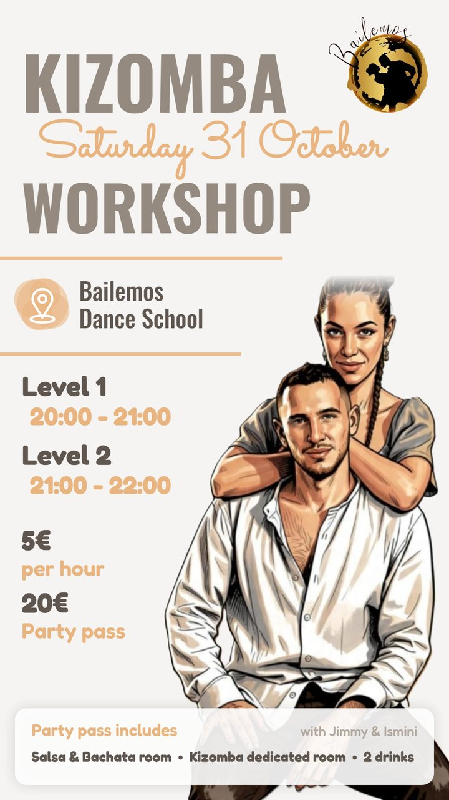
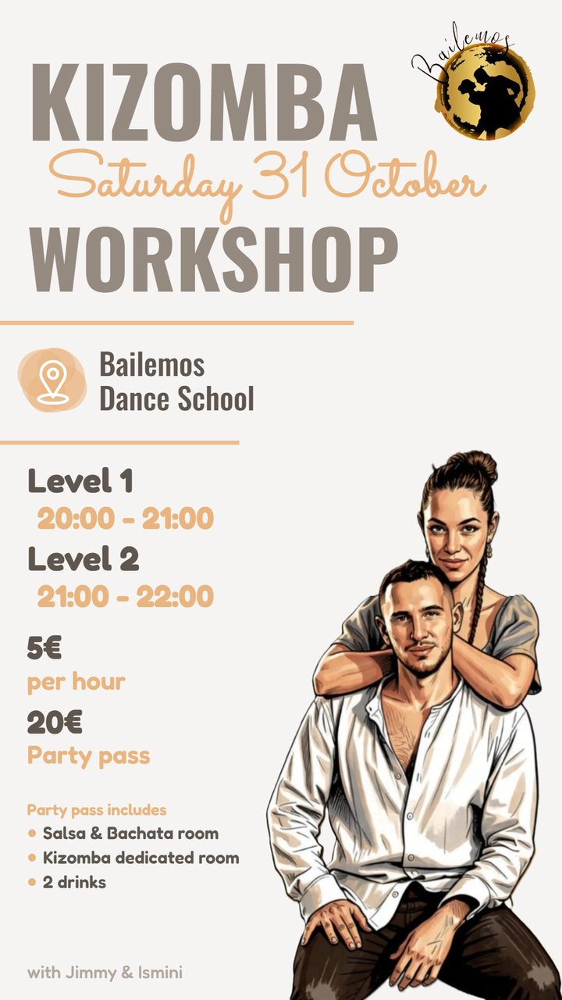
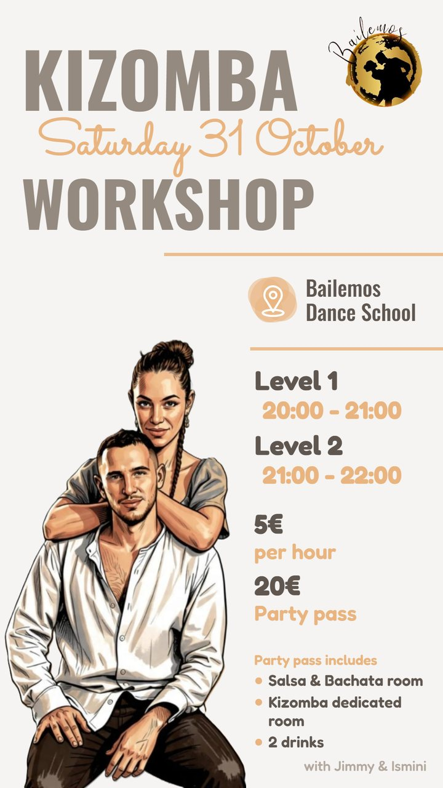
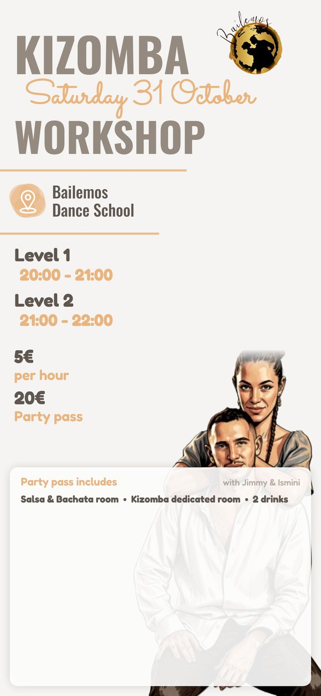
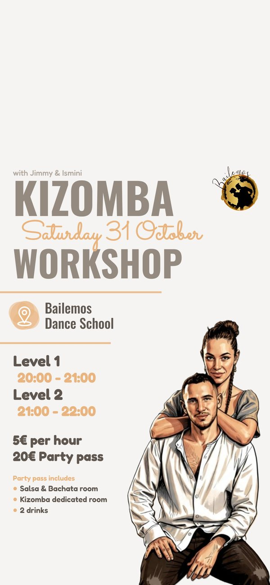
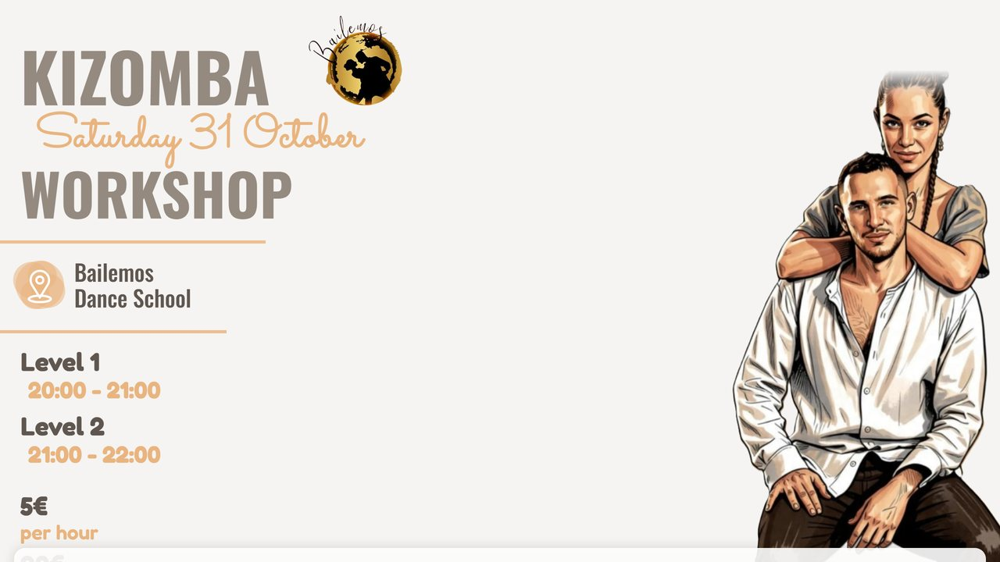

Picture right, whole
Today's reading order; the includes list moves into the text column, off the dancers.


Inventory: 11/11 · picture whole, 0 px covered
FLIER-1 Flier StudioPick one layout per format. Every option keeps all 11 items, and the dancers' picture is whole with nothing over it.
Today's reading order; the includes list moves into the text column, off the dancers.


Inventory: 11/11 · picture whole, 0 px covered
The dancers are read first; all details sit in one right column.

Inventory: 11/11 · picture whole, 0 px covered
Reviewer unsure (taste call, 3.9/5): your pickPasses every hard check (11/11, picture whole, nothing over it); design review split on taste after two rounds.
Details first like a ticket; the two prices flank the dancers.

Inventory: 11/11 · picture whole, 0 px covered
Q1 Which layout should the event flier use?
Top 28% left empty for the lock-screen clock; dancers bottom right, details left.


Inventory: 11/11 · picture whole, 0 px covered
Reviewer unsure (taste call, 3.6/5): your pickPasses every hard check (11/11, picture whole, nothing over it); design review split on taste after two rounds.
Details in one band under the clock zone; prices flank the dancers.

Inventory: 11/11 · picture whole, 0 px covered
Q2 Which layout should the phone wallpaper use?
Three detail columns; the icon column (left) and taskbar (bottom) stay clear of text.


Inventory: 11/11 · picture whole, 0 px covered
Reviewer unsure (taste call, 3.9/5): your pickPasses every hard check (11/11, picture whole, nothing over it); design review split on taste after two rounds.
Titles left, details right, the dancers in the middle.

Inventory: 11/11 · picture whole, 0 px covered
Q3 Which layout should the desktop wallpaper use?